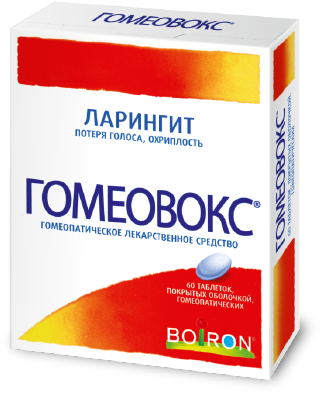

Голос человека так же
важен, как манеры
и внешность.
Мы редко отдаем
себе отчет,как много
можно сделать
с его помощью:
отстоять свою точку зрения
в споре
донести до подчиненных важную информацию…
поддержать
любимую подругу
в караоке
рассказать близкому человеку
о своих чувствах
Прочувствовать и понять важность голоса в полной мере мы, к сожалению, умудряемся лишь тогда, когда его лишаемся!
Иногда достаточно забытого дома шарфа, стакана холодного напитка, небольшого сквозняка, стресса или перенапряжения, чтобы вместо привычного «четко поставленного харизматичного голоса» столкнуться с охриплостью, осиплостью или даже полной его потерей.
Главными причинами потери голоса специалисты называют ларингиты (сюда можно отнести воспалительные процессы гортани на фоне переохлаждения и прочих внешних причин), либо перенапряжение (ситуации, про которые принято говорить «сорвал голос»).
Специалисты, чья деятельность связана непосредственно
с использованием голоса: вокалисты, педагоги, политики, лекторы и тренеры пользуются проверенными способами защитить свой голос за несколько дней до важного события:
употреблять только теплую пищу и напитки, воздержаться от чересчур горячего и чересчур холодного
отказаться
от курения
и алкоголя
избегать
стрессов
и волнений
делать специальную гимнастику для голосовых связок
Но даже с профилактикой что-то может пойти не так… Поэтому помимо вышеперечисленных средств помочь защитить голос или справиться с его потерей может помочь «Гомеовокс» - многокомпонентный препарат, созданный специально для борьбы с ларингитами различной этиологии, усталостью голосовых связок, хрипотой и потерей голоса.

Действие «Гомеовокс» основано на силе лекарственных трав и растений, которые способствуют смягчению острого состояния и возвращению голосовых функций.
«Гомеовокс» поможет твоему голосу вновь зазвучать уверенно и авторитетно,
а если нужно – нежно и сексуально!